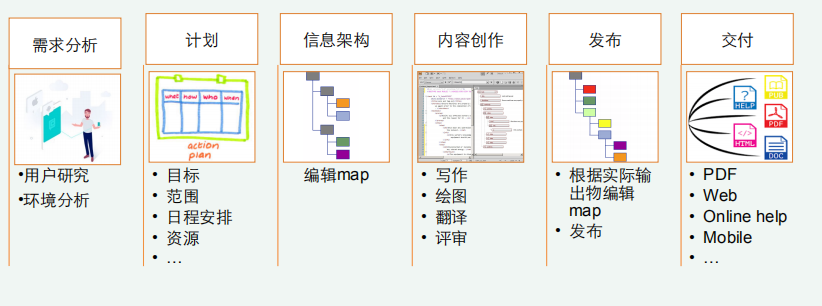
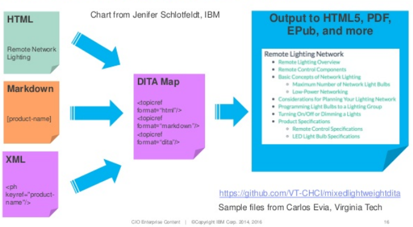

DITA
what you see is not what you get; what you see is only one option.
DITA的首字母D是达尔文的第一个字母，与进化论作者名字相同，是DITA标准设计者可以选择的最贴切的名字。DITA在实施过程中，信息架构的构建规则和内容策略需要不断演化与进化，优质可重用内容的形成需要经历自然选择和淘汰过程。
DITA信息开发流程

结构化写作特点：
-
模块化
-
内容与样式分离
-
元数据
-
多格式发布
-
内容重用
DITA的特点：
- 应用领域广
- 融合信息开发理念
- 信息架构可进化
- 重用灵活
- 兼容性强
DITA成熟度模型
### 模型概要
-
Level 1: Topics 在最基本的层次上，DITA是一种XML文档标记语言。但即使在最简单的层次上，DITA仍会强制执行主题结构和重用体系结构，以允许DITA文档重用其他结构化项目中的内容。这种标准化还为其他人重新使用主题级别奠定了基础，因为面向文档的内容的初始迁移逐渐发展为结合了围绕主题和地图的更好的管理和创作实践。
-
Level 2: Scalable Reuse 面向主题的创作可围绕受众的主要使用单位（针对大多数模块化内容的最安全，可扩展性最高的重用策略）组织可重复使用的内容。可以通过使用DITA映射对外部的更高级结构（例如章节甚至Web页面）进行编码，针对不同的媒体和主题的不同变体（例如产品变体的文档）重复使用，重新组合和组织相同的主题。构成可交付成果的主题。
-
Level 3: Specialization and Customization 通过专业化，DITA可以为信息键入策略提供结构性支持，从而改善创作一致性并指导质量改进。专业化还可以针对特定主题或可交付成果的类型对内容进行更紧密的建模，语义搜索和定制过程可以利用这些内容
-
Level 4: Automation and integration 内容专业化之后，您就可以利用对关键过程的自动化来进行语义投资，并开始将内容捆绑在一起-甚至跨不同的专业或创作学科。例如，您可以在市场营销和培训中共享通用内容，或者在整个内容生命周期中共享通用流程和基础架构。
-
Level 5: Semantics on demand 随着DITA多样化以在组织中占据更多角色，单一应用程序解决方案不再能够提供每个作者或产品可能需要的专业支持。相反，共享DITA作为通用语义货币的跨应用程序，跨仓库的策略使组可以使用最适合其内容创作和管理需求的工具集，同时在整个内容生命周期中共享内容甚至在组之间转移创作责任。除了已知流程的自动化之外，我们现在还可以灵活地根据需要组合新的应用程序和内容源，从而提供处理灵活性和适应性强的渐进式内容策略。
-
Level 6: Universal semantic ecosystem 随着DITA在内容孤岛和应用程序之间提供可扩展的语义带宽，出现了一种新型的语义生态系统：可以随内容跨旧边界移动，包装非结构化内容并提供与半结构内容和托管数据源的经过验证的集成的语义。 DITA成为跨组织，跨标准，通用内容使用的语义交换标准
DITA 成熟度模型帮助企业顺利部署DITA
DITA成熟度模型可以应对DITA的采用挑战。 DITA成熟度模型不是采用全有或全无的方法，而是假设公司将采用渐进的逐步方法，一次吃掉一口DITA大象。
除了经过验证的模式和最佳实践之外，DITA成熟度模型还可以帮助每个公司为其DITA计划找到合适的切入点，而不管其DITA能力是否强大。因此，DITA成熟度模型非常灵活，可以适应每个组织的个人情况和目标。
DITA成熟度模型还有助于衡量模型的六个级别的成功程度。特定的里程碑可帮助组织了解它们在每个级别中的位置，从而在他们努力实现DITA的最大有效性和效率时提供对进度的整体，上下文的了解。
尽管引入了组织上的巨变，但DITA仍然是提高XML内容价值的巨大机会。 DITA成熟度模型可以帮助任何公司驾驭DITA水域，无论是计划深入到深端还是只是将脚趾浸入浅端。
基本术语
建筑图纸 -> DITA标准
房子 -> map
DITA map，用于组织topic的DITA文件
房间 -> topic
DITA topic,DITA topic是构建内容的基本模块，不同类型的内容用不同的载体（topic类型）
窗户、门 -> 内容组件element
DITA元素类型的XML元素，其@class属性值必须是符合DITA规范或符合专门化层级的元素名
对组件的描述 -> 属性attribute
描述元素属性的元数据，用@表示
其他
DITA文件
符合DITA规范的XML文件，根元素必须为
元数据（metadata）
提供有关信息的信息，可以是属性或元素
DITA专门化（specialization）
对现有的DITA架构（topic，元素和属性）进行扩展，使之更加适合内容需求，DITA专门化是DITA定制的一种形式.
整体框架
Base architecture
• 作者不需要更详细的信息分类
• 开发者创建轻量级的DITA应用
• 开发者基于topic作专门化
如：菜谱、数据表
Technical Content
• 技术传播者创作面向任务的信息，需要多种信息类型
• 商业分析师记录过程和流程
• 创作书本
如：用户手册、维修手册、在线帮助、厂商的知识库等
Learning and training
• 制作公司内部或商业培训材料
• 教师制作课件
• 在线培训
LwDITA

轻量级DITA不单纯基于XML的结构化写作。
详情Lightweight DITA: A pre/overview, Michael Priestley。
参考信息(待更新)
-
http://docs.oasis-open.org
本文主要内容来源于本文内容部分引用自 TC互联，仅作学习分享。
如需转载请注明作者与来源。